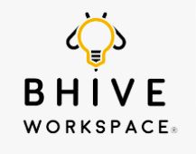
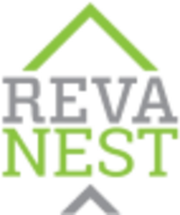

Inspiration
It all began in the summer of 2023, when I was 13. I turned on the tap, and not a single drop came out. From my balcony, I watched tanker after tanker arrive; our society’s borewells had dried up. There were endless discussions about solutions like rainwater harvesting and percolation pits.
But nothing changed.
This isn’t just my story. Bengaluru faces a daily shortage of about 500 million liters of water, and globally, around 4 billion people live under high water stress.
Existing fixes kept stalling for the same three reasons: large infrastructure changes, high cost and complexity, and no one taking ownership. Every solution sat at the society or government level, and nothing reached the individual tap.
Through my macro and micro surveys, I found something interesting: nearly half of household water loss comes from simple misuse, not scarcity.

Objective
Everyone should be able to save water every day, right at their tap. By pairing affordable technology with behavioral change, I want to make responsible water use a flexible, everyday habit that scales from homes to schools, hospitals, and public infrastructure.
System Overview
NIRI is a patented, IoT-enabled mechatronic water conservation system that cuts wastage through intelligent flow regulation, real-time leak detection, automatic shut-off, and behavior-driven nudges. It’s built as a plug-in extension module that retrofits onto any existing tap or pipeline. Inside, a gear system drives a ball valve, rotating it to precise angles for fine-grained flow control. Refined over 6 iterations in 3 years, the device has 5 modes tuned to the highest-consumption points. It pairs with an AI water assistant that tracks consumption and uses the most effective methods to cut usage while maintaining comfort.

Journey
1. Building the Tech
In the ATL lab, every test and piece of feedback reshaped NIRI. I made the power supply self-sufficient with extended battery life for homes without a direct connection, simplified the controls, and rebuilt the blocking mechanism completely, moving from relays and a potentiometer to a servo-driven gear system with a ball valve.


Iteration circuits


2. Deploying and Piloting
The first pilot was my school canteen at Vidyashilp Academy. I was so worried the gears would buckle under pipe pressure that I checked on it every hour, and my teachers were sure something was wrong with me. From there, NIRI moved into hospitals and homes, where each site gave me different feedback.


3. Validation
Mid-demo before 15 government civil engineers, I heard the familiar low rumble of a failing motor, and the demonstration stopped. I asked for a second day, came back, and earned their technical validation for the device achieving up to 30% reduction. Now I carry a spare of every component, which I call my “motor paranoia.”


4. IP
Patent No. 591067, “A Device and System for Conservation of Water”, granted to Aadya Kanchan by the Patent Office, Government of India, on 3 June 2026 (Application No. 202441093699, filed 29 November 2024).

Impact
Live impact dashboard Live
Real-time impact of water conservation, read from the NIRI system.
25devices active
30%reduction
18months active
$755.54water bill saved, at $0.006 per litre
Total water saved
1,25,923.10
litres
Live total water saved across all devices.
That’s enough water for…
932people (daily water)
135 litres per person a day
135 litres per person a day
466houses (daily supply)
270 litres per house a day
270 litres per house a day
Key impact summary
Carbon emissions prevented
43.32 kg CO₂
Energy conserved
75.55 kWh
Today’s savings
1500litres
0.52kg CO₂
0.90kWh
See the live dashboard on the NIRI site ↗
Collaborations and deployments


Recognition and outreach


NIRI taught me that even the best technology fails if people don’t adopt it. Solving big problems doesn’t always take grand gestures. Sometimes it takes simple, efficient solutions that create small changes every day.
Videos & resources
Regulation mode
Leak mode
Installation explanation · 0:47–2:27
Research paper
“Chrono Aqua OSR (NIRI): A Real-Time Mechatronic System for Smart Urban Water Conservation with Customized Control”
International Journal of High School Research, 2026, Vol. 8 Issue 12, p. 70–80.